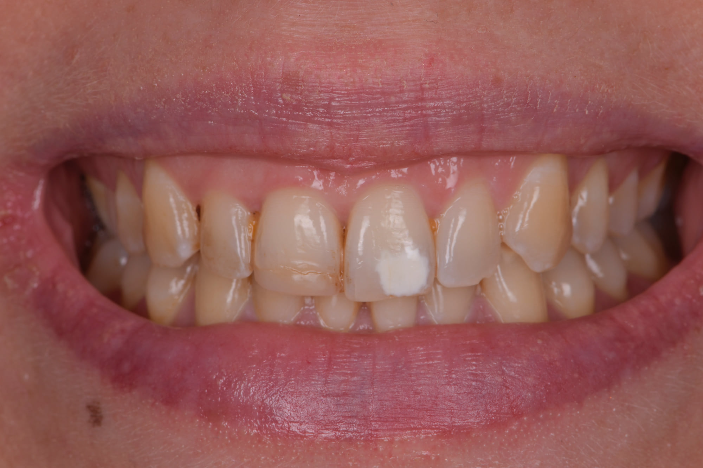
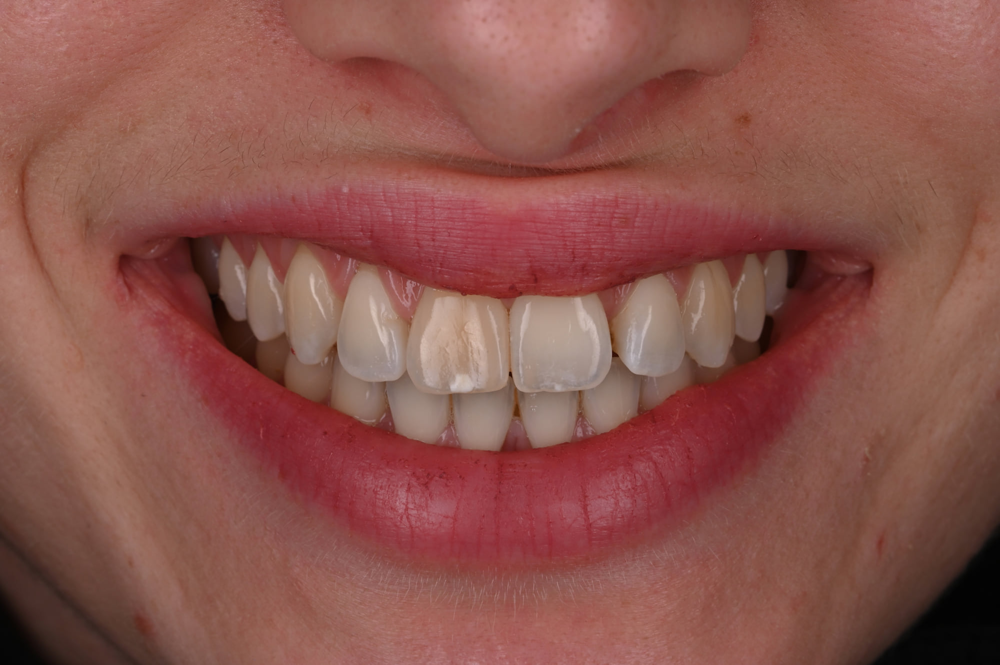
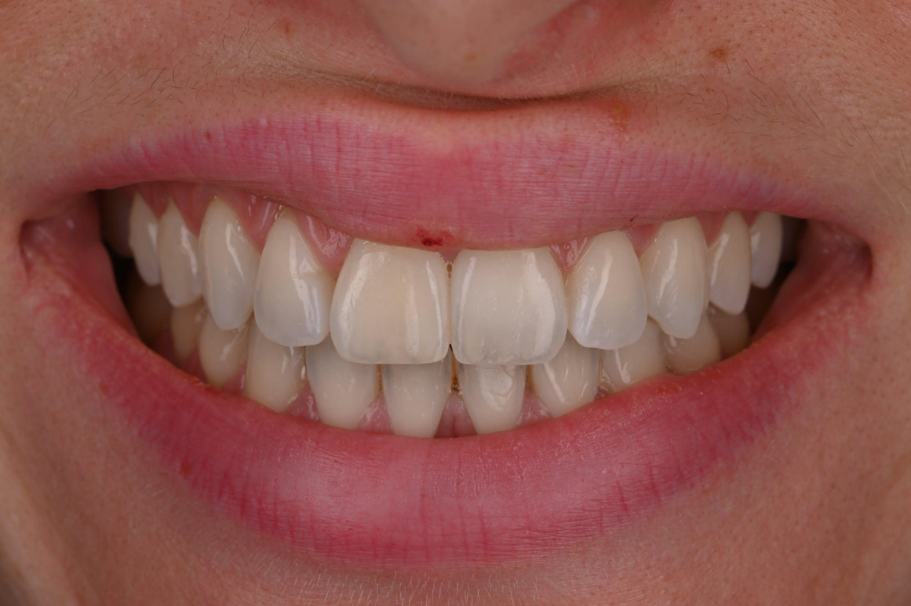

Accueil › Patient › MIH et infiltration
Cas clinique
Prise en charge conservatrice de taches de MIH
Avant de masquer une tache par une restauration, il est parfois possible de réduire son contraste avec le reste de la dent, puis de la traiter par une approche beaucoup plus conservatrice.

Praticien hospitalier, Pitié-Salpêtrière · CMME, Sainte-Anne

1 / 5
Une tache, deux situations
Deux situations cliniques différentes, un même raisonnement : réduire d’abord le contraste de la tache, puis la traiter en retirant le moins de tissu possible.
Une tache, deux situations
Les taches de MIH peuvent créer un contraste important avec le reste de la dent. C’est ce contraste, plus que la tache elle-même, qui les rend visibles dans le sourire.
La stratégie ne consiste donc pas nécessairement à masquer immédiatement la zone par une restauration.
Les deux situations présentées ici sont différentes par leur point de départ, et identiques par le raisonnement suivi.
Pourquoi éclaircir avant l’érosion-infiltration ?
Lorsque la différence de teinte entre la tache et le reste de la dent est importante, l’éclaircissement préalable peut réduire ce contraste. L’étape d’érosion-infiltration intervient ensuite sur une situation colorimétrique plus favorable, facilitant l’intégration esthétique de la tache.
Autrement dit : on rapproche d’abord la couleur de la dent de celle de la tache, puis on traite la tache. L’ordre compte.
2 / 5
Premier cas : MIH sur une incisive
Cas 1 : tache de MIH sur une incisive
Patiente de 30 ans, présentant une tache importante de MIH sur la 21.
Traitement : éclaircissement, puis érosion-infiltration.
3 / 5
Deuxième cas : MIH sur une dent dyschromiée
Cas 2 : MIH sur une dent dyschromiée après un traumatisme
La dent présente une dyschromie faisant suite à un traumatisme survenu dans l’enfance.
La différence entre la tache de MIH et la teinte générale de la dent la rend particulièrement visible.
Traitement : éclaircissement, puis érosion-infiltration.
4 / 5
Pourquoi une approche conservatrice
Pourquoi privilégier une approche conservatrice ?
L’objectif est de traiter la tache en limitant autant que possible la perte de substance dentaire.
Dans les situations indiquées, l’érosion-infiltration constitue une approche particulièrement conservatrice : la résine pénètre la zone poreuse de l’émail et en modifie le comportement optique.
Lorsque la préparation superficielle crée un petit défaut nécessitant d’être restauré, un apport localisé de composite peut parfois compléter le traitement.
5 / 5
Ce que ces deux cas permettent de comprendre
Ce que ces deux cas permettent de comprendre
Le traitement esthétique d’une tache ne commence pas nécessairement par son masquage avec un matériau restaurateur. La modification préalable du contraste puis l’utilisation d’une technique d’érosion-infiltration peuvent permettre, lorsque l’indication s’y prête, une approche beaucoup plus conservatrice.
Les photographies du cas


Les photographies présentent des situations cliniques individuelles. Le traitement et le résultat dépendent de la situation initiale et ne peuvent être transposés à un autre patient sans examen clinique.
Faire évaluer une tache
Une tache visible n’appelle pas toujours la même réponse : son origine, sa profondeur apparente et son contraste avec le reste de la dent orientent le traitement.
Prendre rendez-vous